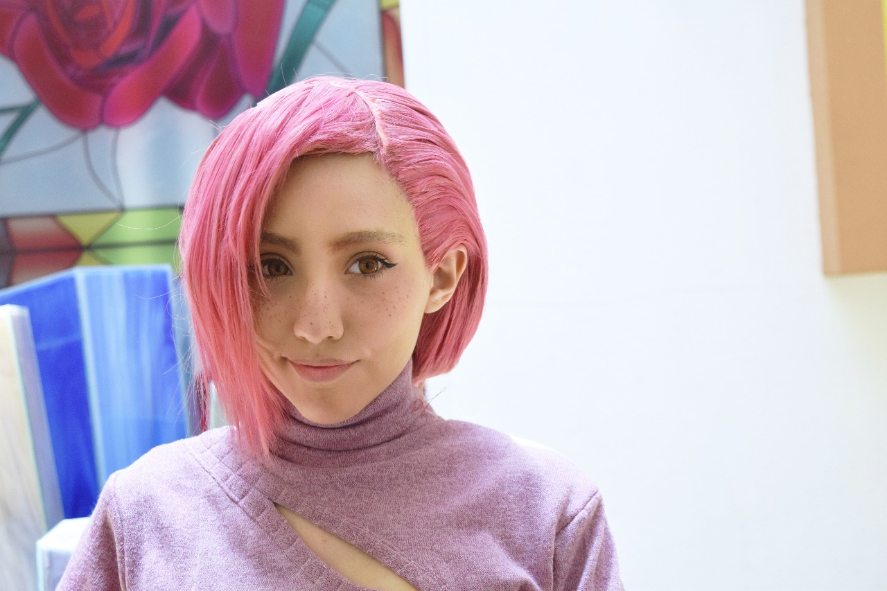
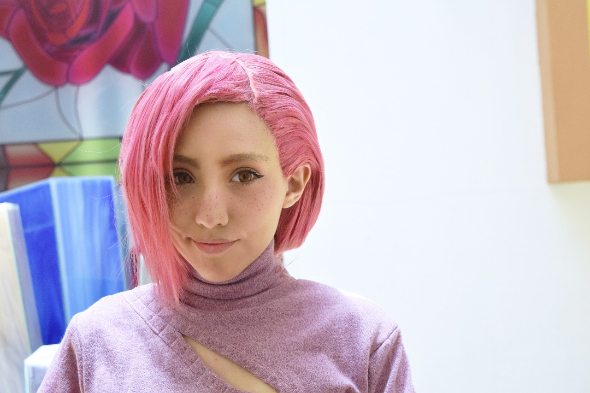

Quizá la mayoría no lea esto pero creo que vale la pena escribirlo para los pocos que se tomen el tiempo o les interese c:
Me puedes decir Meri que es la abreviación de mi nombre (Sonny MERIweather), Meriweather es un apellido, pero por alguna razón me empezaron a decir Meri haha.
Nací el 03 de marzo (03/03 me gusta el número en conjunto) y soy PISCIS, me encanta lo que dice el zodiaco de mí y confirmo la mayoría de las cosas, así como me gusta jugar con el tema del zodiaco en plan "es en serio" (PERO REALMENTE ES BROMA, mucha gente cree que sí sigo esa ideología xD)
Me gusta el spaghetti (nunca supe escribirlo HAHA) la pizza, el SUSHI y el helado de chicle, no he cambiado esos gustos durante muchos años así que creo que se quedarán.
Mis animales favoritos de toda la vida son las focas y los borregos pero me gustan también los mapaches y erizos. uwu
Hay muchas cosas que podría decir de mí, heh.
Así como que he logrado y fallado en muchas cosas (como todos, supongo), pero creo que entre más la he cagado he aprendido muchísimo, así como también he sabido aceptar mis errores en el ajuste de cuentas o conmigo misma cuando estoy divagando.
Me considero alguien con muchas experiencias malas y buenas, y soy del tipo de persona que se involucra lo suficiente con los otros como para debatir cuando algo no me parece o intentar apoyar a quienes son cercanos a mí.
De mi persona me gusta mucho mi voluntad y perseverancia, así como mi flexibilidad para entender las cosas y no cerrarme extremamente a una sola idea, así como mi capacidad de recepción.
Estoy estudiando Psicología, pero hay cosas que me gustan más.
Soy partner de twitch (twitch.tv/smeriweatherr)y artista.
Me considero artista porque desde siempre he sentido una gran pasión por crear cosas que salen de mi imaginación e incluso hacer realidad proyectos desde 0, esto me ha facilitado ser ingeniosa con props de cosplay y hacer mercancía única hecha por mis manitas tal como peluches, cerditos alcancías con ropa y algunas otras coasas que no se pueden encontrar en otro lugar, o no con mi aura al menos.
Me interesa mucho cantar y pronto sacaré mis proyectos musicales, me esfuerzo en practicar con mi voz y mejorar cada día en ese ámbito.
Modelo ropa de algunas marcas e incluso ropa hecha por mí misma ya que sé costurar (un 8/10).
Hago props de cosplay como lo dije anteriormente así como podría decir que soy profesional en estilizar pelucas de cosplay. c:
Hago videos para youtube de vez en cuando (https://www.youtube.com/c/smeriweatherr) y también siento una gran pasión por escribir textos (mi ortografía es 9.99999/10).
También me encanta dibujar, quiero crear mi propio cómic en el futuro y ascender lo suficiente como para convertirlo en caricatura/animación con movimiento.
Tengo también experiencia haciendo juegos flash y animación, toda mi infancia y pubertad me dediqué a la creación de animaciones algo cringe pero bastante fluidas para mi edad, quería dedicarme a ello pero lo dejé cuando analicé el campo laboral 🙁
Soy una persona que sabe improvisar bastante cuando tiene algún problema.
Me gusta cocinar, cocino muy bien algunos platillos de comida.
Tengo una gatita llamada MAKO.
Mi husbando es Jotaro Kujo y Iskander de Fate.
Mi anime favorito Mob psycho 100 jiji. Jojo's también me gusta mucho.
Si las personas tuvieran una advertencia cuando te vas a acercar a ellas, seguramente la mía sería algo que tuviera que ver con mi carácter.
Si hay algo que no me parece lo digo, y si algo no me agrada no me callo. Por lo tanto siempre advierto a mi comunidad que si actúan de mala manera no me tiento en banear personas, porque no prefiero cantidad a calidad. (Aún, supongo).
Hay más cosas que podría decir de mí, pero creo que esto es suficiente por el momento.
ESpero poder llevarme bien con la mayoría, y sino, una patada.
No, mentira hahaha.